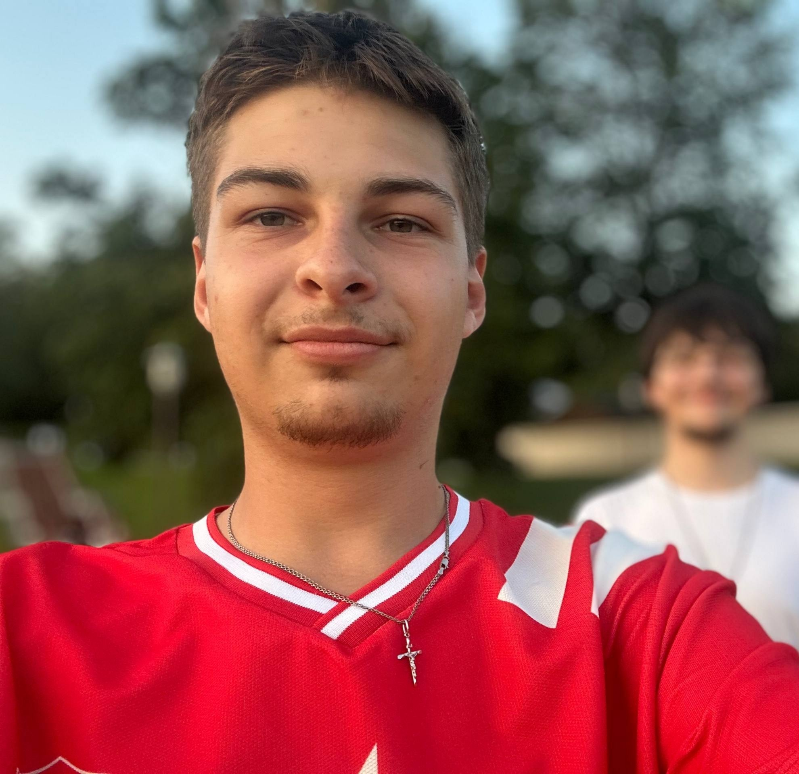

Добро пожаловать!

Привет! Меня зовут Игорь Скидан. Мне 19 лет, учусь на 3 курсе ГрГУ имени Янки Купалы на факультете ИИПС.
Это мой личный сайт — тут я рассказываю о себе, своих увлечениях и, конечно, о любимой игре — Dota 2. Катай по меню сверху, чтоб перейти в нужный раздел.
Разделы сайта
Кратко обо мне
| Параметр | Значение |
|---|---|
| ФИО | Скидан Игорь Николаевич |
| Возраст | 19 лет |
| Вуз | ГрГУ, 3 курс, ИИПС |
| Школа | Правомостовская СШ |
| Любимая игра | Dota 2 |
| Любимые герои | Invoker, Lich, Brewmaster |
Мои любимые герои в Доте
Кратко, чтоб ты понял, кого я катаю:
- Invoker — 10 заклинаний, если умеешь — выносишь всех.
- Lich — топовый саппорт, спасает команду в замесах.
- Brewmaster — разделяется на трёх элементалей, хрен убьёшь.
Больше про них — на странице Dota 2.